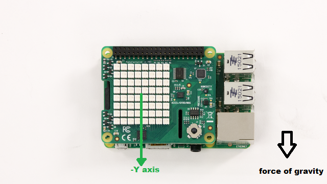
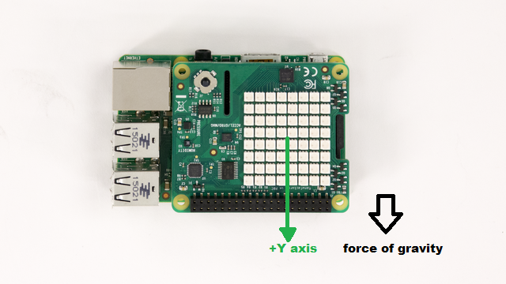
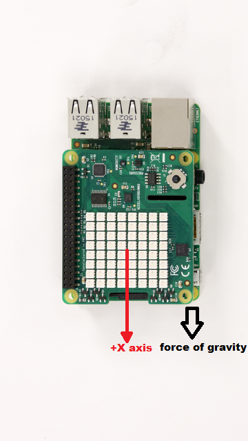
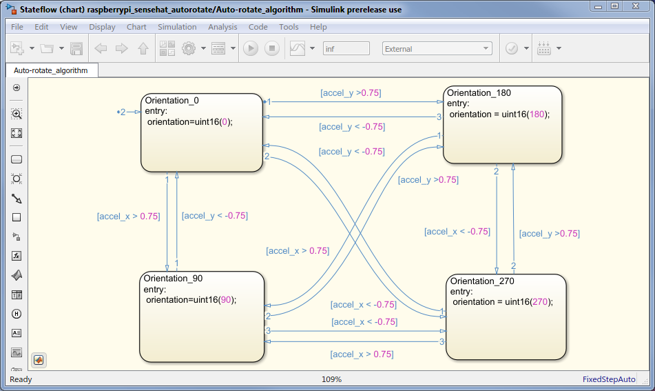

Auto-rotate an image displayed on Sense HAT LED matrix
This example shows you how to develop a Simulink model to implement an algorithm to read the Accelerometer On-board Sense HAT and control the rotation of the image displayed on the LED matrix.
Contents
- Introduction
- Prerequisites
- Required Hardware
- Introduction to Auto-rotation algorithm
- Auto-rotation algorithm
- Task 1 - Implement the auto-rotation algorithm in Simulink
- Task 2 - Add hardware specific blocks
- Task 3 - Configure and Run the Auto-rotation Model in External Mode
- Task 4 - (Optional) Configure and Run the Auto-rotation Model as a Standalone Application
- Summary
Introduction
The Raspberry Pi Sense HAT is an add-on board for Raspberry Pi hardware. It has an 8X8 RGB LED Matrix, a five-position joystick and includes the following sensors:
- Humidity sensor
- Pressure sensor
- IMU sensor (Accelerometer, Gyroscope, and Magnetometer)
In this example, you will develop a Simulink model to auto-rotate an image displayed on LED matrix according to the orientation of Sense HAT. The Accelerometer data is used to determine the orientation of Sense HAT.
Prerequisites
- We recommend completing Getting Started with Raspberry Pi Hardware example.
Required Hardware
To run this example you will need the following hardware:
- Raspberry Pi hardware
- Raspberry Pi Sense HAT
Introduction to Auto-rotation algorithm
Auto-rotation of the Image refers to the technique used widely in most of the modern smart phones and tablets to rotate the display of the device according to the position in which the device is held. These devices use the on-board Accelerometer to determine the position. By reading the Accelerometer data, we identify the principal axis along which force of gravity is acting.
In this example, we will read Accelerometer available on Sense HAT. Depending on the value of acceleration, we can determine the principal axis along which force of gravity is acting. This information will then be used to set the orientation for the image displayed on the LED matrix of Sense HAT.
Auto-rotation algorithm
In this section, we will discuss about the auto-rotation algorithm.
When Raspberry Pi is held vertical (this refers to the position in which the HDMI port of the Raspberry Pi is pointing downwards), the force of gravity acts only on either X or Y axis of the accelerometer.
Depending on the axis along which the force of gravity is acting, we can decide on the orientation for displaying the image.
- If the board is rotated to point upwards, then force of gravity acts along negative y axis.

- If the board is rotated to point downwards, then force of gravity acts along positive y axis.

- If the board is rotated to left, then force of gravity acts along positive X axis.

- If the board is rotated to right, then force of gravity acts along negative X axis.

We will heuristically detect orientation of the Sense HAT board by comparing the acceleration value along X and Y axis to a threshold of 0.75g. If the acceleration along one of these axis exceed 0.75g, we will deem that the board is roughly oriented along that axis.
As in conventional design for auto-rotation algorithm, we will not consider the acceleration along the Z axis to decide on the value of orientation.
After determining the principal axis, we can now map the value of orientation to each of the positions.
- If the board is rotated to point upwards, then force of gravity acts along negative y axis. In this case Orientation = 0.
- If the board is rotated to point downwards, then force of gravity acts along positive y axis. In this case Orientation = 180.
- If the board is rotated to left, then force of gravity acts along positive X axis. In this case Orientation = 90.
- If the board is rotated to right, then force of gravity acts along negative X axis. In this case Orientation = 270.
Task 1 - Implement the auto-rotation algorithm in Simulink
In this section, we shall implement the auto-rotation algorithm in Simulink using a Stateflow chart.
1, Create a new Simulink model.
2. From the Simulink library browser, add a Stateflow chart to your model. This can be found under the Stateflow library.
3. In the Stateflow chart, create four states corresponding to four positions of Sense HAT.
4. Draw transitions lines between these four states. Each transition corresponds to different value of the acceleration along the X and Y axis.
5. In each state, assign the value of orientation to the output. The value of orientation to be assigned is described in the 'Auto-rotation algorithm' section above.
6. Add the 'default transition' to the state where the orientation for the image is 0.
The complete algorithm realized using Stateflow chart would look similar to the implementation shown below:

Task 2 - Add hardware specific blocks
In this section, we will add Raspberry Pi Sense HAT specific blocks to the Simulink model we have developed in Task 1.
1. In the Simulink library browser, navigate to the Simulink support package for Raspberry Pi library. Under this, double click on the Sense HAT group. This will open the Simulink Sense HAT library.
2. Add the IMU sensor block from the Sense HAT library into your Simulink model. Configure this block to read acceleration by setting the 'Active sensor' parameter to 'Accelerometer'. Connect the output of this block to the input of Stateflow chart.
3. Add the LED matrix block from the Sense HAT library into your model. In order to configure it to display an image, set the 'Mode' parameter to 'Display Image' and set the 'Orientation Source' as 'Input port'.
4. The LED matrix block displays an 8x8x3 RGB image. Add a constant block to the model and set its value as 'imread('senseHAT_demo.png')'. senseHAT_demo.png is a sample image shipped as part of this example.
)){kind=link}
5. The orientation for the image to be displayed is determined by the Stateflow chart. Connect the output of the Stateflow chart to the 'Orientation' port of LED matrix block.
Task 3 - Configure and Run the Auto-rotation Model in External Mode
When you run the auto-rotation model in External mode, the image displayed on the LED matrix will be oriented according to the position in which the Sense HAT is held.
1. Open the Auto-rotate image on LED matrix model.
2. Select Tools > Run on Target Hardware > Options.... Review the parameters on the page that opens and make sure that the connection parameters for your Raspberry Pi board are correct.
3. In the model, change the Simulation mode on the toolbar to External.
4. In the model, click the Run button on the toolbar to run the model on Raspberry Pi hardware.
5. Observe the image auto-rotate when you change the position in which the Sense HAT is held.
6. While the model is running, double click on the Stateflow chart and observe the state transitions when you rotate the Sense HAT. The current state is highlighted with a blue boundary.
7. Press the Stop button on the model to stop model execution.
Task 4 - (Optional) Configure and Run the Auto-rotation Model as a Standalone Application
1. Open the Auto-rotation image on LED matrix model.
2. Select Tools > Run on Target Hardware > Options.... Review the parameters on the page that opens and make sure that the connection parameters for your Raspberry Pi board are correct.
3. In the model, click the Deploy To Hardware button on the toolbar to run the model on the Raspberry Pi hardware.
4. Stop the model running on the Raspberry Pi hardware by executing the following on the MATLAB® command line
stopModel(r,'raspberrypi_sensehat_autorotate');
Summary
This example showed a Simulink model implementing an auto-rotation algorithm.
IMU sensor and the LED Matrix block from the Raspberry Pi Sense HAT library were used to Implement this algorithm.
The example showed how the model may be run in External mode and alternatively, how it can also be deployed as a standalone application on Raspberry Pi hardware.